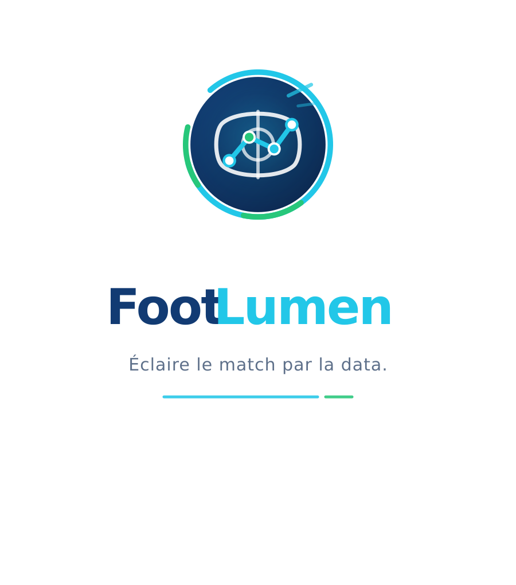
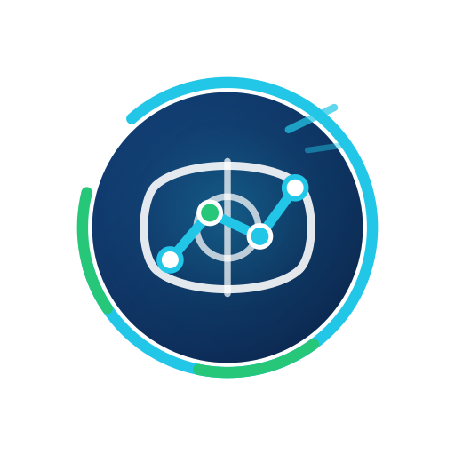
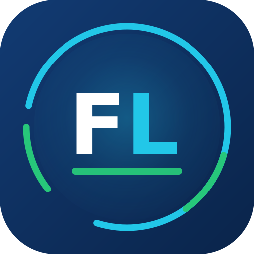

Concept
FootLumen combine un disque football/pitch, une trajectoire de donnees et un signal lumineux. Le systeme visuel evoque la clarte, la data, le football, la confiance et la modernite, sans reference aux paris sportifs, a l'argent, aux gains ou au casino.
Palette principale
Bleu profond
#123B73
#123B73
Cyan lumineux
#22C7E8
#22C7E8
Vert terrain
#27C77A
#27C77A
Blanc
#FFFFFF
#FFFFFF
Logos inclus



Regles d'usage
- Conserver une zone de respiration au moins egale a la hauteur du F autour du logo.
- Utiliser le symbole seul pour les formats tres petits, favicons et icones.
- Privilegier les fonds blanc, bleu profond ou images fortement assombries.
- Ne jamais ajouter ticket, piece, devise, couronne VIP, jeton, roulette, carte ou langage lie aux paris.
- Ne pas deformer, incliner, ombrer fortement ou recolorer hors palette.
Typographies conseillees
Pour un rendu moderne et data-driven: Inter, Sora ou IBM Plex Sans. Les SVG utilisent une pile systeme sans incorporer de fichiers de police.
Exports Discord
Deux variantes sont fournies: bannieres 16:9 marquees et clean, en 1920x1080 et 960x540. La version clean est prevue pour les zones ou Discord superpose du texte.